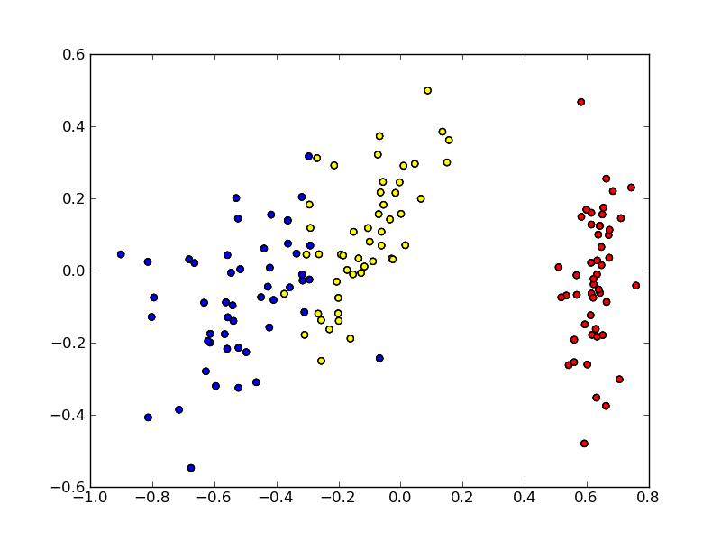

This is documentation for Orange 2.7. For the latest documentation, see Orange 3.
Multidimensional scaling (mds)¶
The functionality to perform multidimensional scaling (http://en.wikipedia.org/wiki/Multidimensional_scaling).
The main class to perform multidimensional scaling is Orange.projection.mds.MDS
- class Orange.projection.mds.MDS(distances=None, dim=2, **kwargs)¶
Main class for performing multidimensional scaling.
Parameters: - distances (Orange.misc.SymMatrix) – original dissimilarity - a distance matrix to operate on.
- dim (int) – dimension of the projected space.
- points (Orange.core.FloatListList) – an initial configuration of points (optional)
An instance of MDS object has the following attributes and functions:
- points¶
Holds the current configuration of projected points in an Orange.core.FloatListList object.
- distances¶
An Orange.misc.SymMatrix containing the distances that we want to achieve (lsmt changes these).
- projected_distances¶
An Orange.misc.SymMatrix containing the distances between projected points.
- original_distances¶
An Orange.misc.SymMatrix containing the original distances between points.
- stress¶
An Orange.misc.SymMatrix holding the stress.
- dim¶
An integer holding the dimension of the projected space.
- n¶
An integer holding the number of elements (points).
- calc_stress(stress_func=SgnRelStress)¶
Compute the stress between the current projected_distances and distances matrix using stress_func and update the stress matrix and avgStress accordingly.
- run(iter, stress_func=SgnRelStress, eps=1e-3, progress_callback=None)¶
Perform optimization until stopping conditions are met. Stopping conditions are:
- optimization runs for iter iterations of smacof_step function, or
- stress improvement (old stress minus new stress) is smaller than eps * old stress.
Parameters: - iter (int) – maximum number of optimization iterations.
- stress_func – stress function.
- calc_distance()¶
Compute the distances between points and update the projected_distances matrix.
- lsmt()¶
Execute Kruskal monotone transformation.
- smacof_step()¶
Perform a single iteration of a Smacof algorithm that optimizes stress and updates the points.
- torgerson()¶
Run the Torgerson algorithm that computes an initial analytical solution of the problem.
Stress functions¶
Stress functions that can be used for MDS have to be implemented as functions or callable classes:
- __call__(correct, current, weight=1.0)
Compute the stress using the correct and the current distance value (the Orange.projection.mds.MDS.distances and Orange.projection.mds.MDS.projected_distances elements).
Parameters:
This module provides the following stress functions:
- SgnRelStress
- KruskalStress
- SammonStress
- SgnSammonStress
Examples¶
MDS Scatterplot¶
The following script computes the Euclidean distance between the data instances and runs MDS. Final coordinates are plotted with matplotlib (not included with orange, http://matplotlib.sourceforge.net/).
Example (mds-scatterplot.py)
import Orange
# Load some data
iris = Orange.data.Table("iris.tab")
# Construct a distance matrix using Euclidean distance
euclidean = Orange.distance.Euclidean(iris)
distance = Orange.misc.SymMatrix(len(iris))
for i in range(len(iris)):
for j in range(i + 1):
distance[i, j] = euclidean(iris[i], iris[j])
# Run 100 steps of MDS optimization
mds = Orange.projection.mds.MDS(distance)
mds.run(100)
# Initialize matplotlib
import pylab
colors = ["red", "yellow", "blue"]
# Construct points (x, y, instanceClass)
points = []
for (i, d) in enumerate(iris):
points.append((mds.points[i][0], mds.points[i][1], d.getclass()))
# Paint each class separately
for c in range(len(iris.domain.class_var.values)):
sel = filter(lambda x: x[-1] == c, points)
x = [s[0] for s in sel]
y = [s[1] for s in sel]
pylab.scatter(x, y, c=colors[c])
pylab.savefig('mds-scatterplot.py.png')
The script produces a file mds-scatterplot.py.png. Color denotes the class. Iris is a relatively simple data set with respect to classification; to no surprise we see that MDS finds such instance placement in 2D where instances of different classes are well separated. Note that MDS has no knowledge of points’ classes.
A more advanced example¶
The following script performs 10 steps of Smacof optimization before computing the stress. This is suitable if you have a large dataset and want to save some time.
Example (mds-advanced.py)
import Orange
import math
# Load some data
iris = Orange.data.Table("iris.tab")
# Construct a distance matrix using Euclidean distance
dist = Orange.distance.Euclidean(iris)
matrix = Orange.misc.SymMatrix(len(iris))
for i in range(len(iris)):
for j in range(i + 1):
matrix[i, j] = dist(iris[i], iris[j])
# Run the Torgerson approximation and calculate stress
mds = Orange.projection.mds.MDS(matrix)
mds.torgerson()
mds.calc_stress(Orange.projection.mds.KruskalStress)
# Optimization loop; calculate the stress only after each 10 optimization steps:
for i in range(100):
old_stress = mds.avg_stress
for j in range(10):
mds.smacof_step()
mds.calc_stress(Orange.projection.mds.KruskalStress)
if old_stress * 1e-3 > math.fabs(old_stress - mds.avg_stress):
break
# Print the points out
for (p, e) in zip(mds.points, iris):
print p, e
A few representative lines of the output are:
<-0.633911848068, 0.112218663096> [5.1, 3.5, 1.4, 0.2, 'Iris-setosa']
<-0.624193906784, -0.111143872142> [4.9, 3.0, 1.4, 0.2, 'Iris-setosa']
...
<0.265250980854, 0.237793982029> [7.0, 3.2, 4.7, 1.4, 'Iris-versicolor']
<0.208580598235, 0.116296850145> [6.4, 3.2, 4.5, 1.5, 'Iris-versicolor']
...
<0.635814905167, 0.238721415401> [6.3, 3.3, 6.0, 2.5, 'Iris-virginica']
<0.356859534979, -0.175976261497> [5.8, 2.7, 5.1, 1.9, 'Iris-virginica']
...